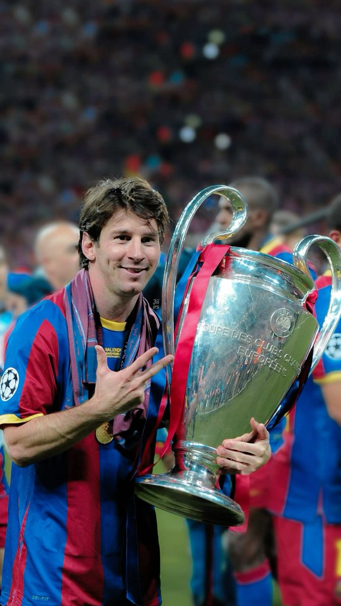
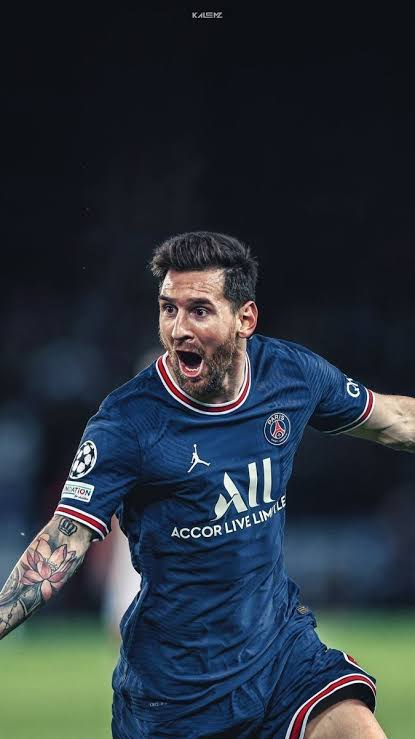
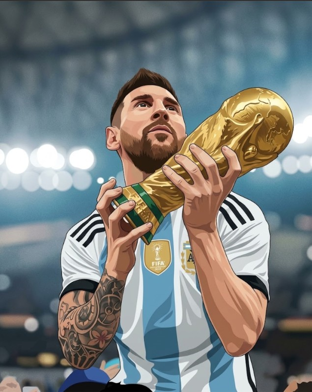

Lionel Andrés Messi | 10
Que con tu sonrisa, tu humildad, tu talento, tus logros y tu historia, sigas inspirando y dando alegria a no solo Argentinos, si no a todas las personas en este mundo.
Nació el 24 de junio de 1987 en Rosario, Argentina. La historia de Leo es la de un pibe de Rosario, como cualquier otro aparentemente, potrero puro en Grandoli y Newell's Old Boys, que a los 13 años tuvo que cruzar el océano Atlántico con un sueño gigante y una mochila cargada de incertidumbre. Barcelona le abrió las puertas y se hizo cargo de su tratamiento de crecimiento, y lo que vino después fue simplemente el relato del mejor jugador que vio pisar una cancha de fútbol. Su debut oficial con el primer equipo culé bajo la tutela de Frank Rijkaard y su consagración absoluta con Pep Guardiola, Messi reescribió todos los manuales del deporte. Pasó de ser un extremo derecho imparable a transformarse en un organizador total, un asistidor letal y un goleador insaciable. Tras romper todos los récords posibles en España, su carrera sumó capítulos dorados en el Paris Saint-Germain y una etapa final llena de magia disfrutando del juego en el Inter Miami de la MLS. Su relato más épico, el que lo consagró en el altar del fútbol mundial, se escribió con la camiseta de la Selección Argentina. Después de años de sufrir golpes durísimos, finales perdidas y cuestionamientos injustos, supo reinventarse, guiar a una nueva generación y levantar la Copa América 2021, la Finalissima 2022 y la tan ansiada Copa del Mundo en Qatar 2022, cerrando el círculo perfecto y un debate de una carrera inigualable


Haz click en un momento para recordarlo.
De niño, una deficiencia en la hormona del crecimiento amenazaba con truncar su sueño de ser futbolista profesional, requiriendo un tratamiento diario con inyecciones muy costosas que su familia y Newell's no podían costear, hasta que apareció el Barcelona.
Dejar su Rosario natal siendo un niño para instalarse en Europa significó enfrentar la soledad, el desarraigo y estar lejos de sus afectos.
Entre 2006 y 2008 sufrió varias lesiones musculares que amenazaron con frenar su explosiva proyección, lo que lo obligó a cambiar radicalmente su dieta, su preparación física y sus hábitos de descanso.
Los años de frustraciones con la Albiceleste (derrotas en finales de Copas América 2015, 2016 y el Mundial 2014) generaron una presión social desmedida, críticas feroces de su propio país e incluso su renuncia temporal a la selección en 2016.
Fue blanco de persecuciones judiciales y un juicio por fraude fiscal en España que generó un desgaste mediático y personal enorme antes de su salida del club catalán.
En 2021, y pese a querer quedarse toda su vida, problemas económicos e institucionales del club culé le impidieron renovar su contrato, obligándolo a llorar en una conferencia de prensa y partir hacia París.
Haz click en un gol para verlo en YouTube.

¿Cómo se despide a alguien que logró que el tiempo se detenga? ¿Cómo se le agradece al dueño de la magia pura, al que convirtió domingos grises en días de fiesta eterna? No hay idioma, no hay diccionario ni palabras en este mundo que alcancen para explicar lo que significaste, lo que significás y lo que vas a significar para siempre. Nos enseñaste que caerse no es el fin, sino el impulso necesario para la revancha. Nos diste la felicidad más inmensa que un deporte puede entregar y curaste heridas colectivas con una pelota pegada a la zurda. Gracias por elegirnos, por sufrir con nosotros, por no aflojar cuando el mundo entero te exigía lo imposible. Gracias por ser nuestro faro, nuestro orgullo y la razón por la cual millones de pibes en el planeta entero creyeron en la magia. No te vas, porque la pelota te va a extrañar cada vez que ruede y nosotros te vamos a llevar grabado en el pecho hasta el último de nuestros días. Gracias por tanto, perdón por tan poco, y eternamente...
Gracias, Leo. Siempre vas a ser el 10 de todos nosotros.